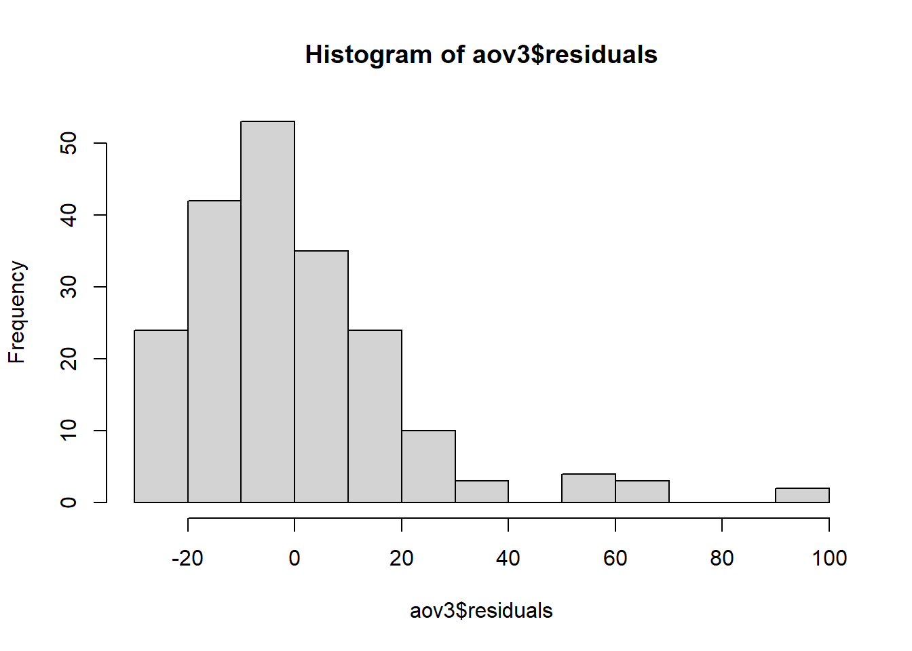

library(tidyverse)
library(readxl)
fip <- read_excel("C:dados-fip606.xlsx")New names:
• `` -> `...11`
• `` -> `...12`library(tidyverse)
library(readxl)
fip <- read_excel("C:dados-fip606.xlsx")New names:
• `` -> `...11`
• `` -> `...12`#BOXPLOT PARA AS VARIAVEIS OVOS, JUVENIS E REDUÇÃO DO FATOR DE REPRODUÇAO
boxplot(ovos ~ trat, data = fip)boxplot(juv ~ trat, data = fip)boxplot(rfr ~ trat, data = fip)fip$fr = as.numeric(fip$fr)
boxplot(fr ~ trat, data = fip)fip$pfr = as.numeric(fip$pfr)
boxplot(pfr ~ trat, data = fip)
#ANOVA 1 FATOR #A ANOVA (Análise de Variância) é uma técnica estatística utilizada para comparar as médias de três ou mais grupos independentes. Ela permite determinar se existem diferenças significativas entre as médias dos grupos e identificar qual ou quais grupos diferem dos demais.
#A principal função da ANOVA é testar a hipótese nula de que as médias dos grupos são iguais, ou seja, que não há diferenças significativas entre eles. Caso haja evidências estatísticas suficientes para rejeitar a hipótese nula, isso indica que pelo menos um dos grupos difere estatisticamente dos outros em relação à média.
#Testar as premissas dos dados é uma etapa essencial para garantir a validade dos resultados, fornecer interpretações corretas, evitar erros estatísticos e selecionar o teste estatístico apropriado. Isso ajuda a obter conclusões mais confiáveis e robustas a partir da análise dos dados.
aov1<- aov(pfr~trat,
data = fip)
summary(aov1) Df Sum Sq Mean Sq F value Pr(>F)
trat 1 286 286.4 0.757 0.385
Residuals 198 74883 378.2 #TESTE DE NORMALIDADE
library(performance)
check_normality(aov1)OK: residuals appear as normally distributed (p = 0.109).check_heteroscedasticity(aov1)OK: Error variance appears to be homoscedastic (p = 0.128).library(DHARMa)
plot(simulateResiduals(aov1))Warning in checkModel(fittedModel): DHARMa: fittedModel not in class of
supported models. Absolutely no guarantee that this will work!#teste de normalidade
hist(aov1$residuals)shapiro.test(aov1$residuals)
Shapiro-Wilk normality test
data: aov1$residuals
W = 0.9884, p-value = 0.1034#ANOVA PARA OVOS
aov2<- aov(log(ovos)~trat,
data = fip)
summary(aov2) Df Sum Sq Mean Sq F value Pr(>F)
trat 1 0.0 0.0038 0.003 0.959
Residuals 198 287.9 1.4540 #TESTANDO AS PREMISSAS
check_normality(aov2)OK: residuals appear as normally distributed (p = 0.315).check_heteroscedasticity(aov2)Warning: Heteroscedasticity (non-constant error variance) detected (p = 0.001).plot(simulateResiduals(aov2))Warning in checkModel(fittedModel): DHARMa: fittedModel not in class of
supported models. Absolutely no guarantee that this will work!#teste de normalidade
hist(aov2$residuals)shapiro.test(aov2$residuals)
Shapiro-Wilk normality test
data: aov2$residuals
W = 0.99163, p-value = 0.3051#TESTE NÃO PARAMETRICO PARA OVOS #O teste de Kruskal-Wallis é um teste não paramétrico utilizado para comparar as médias de três ou mais grupos independentes em uma variável dependente contínua. Ele é usado quando os dados não atendem aos pressupostos necessários para a realização de um teste paramétrico, como a análise de variância (ANOVA).
#É importante ressaltar que o teste de Kruskal-Wallis avalia apenas diferenças entre os grupos, mas não identifica especificamente qual grupo difere de qual. Para identificar essas diferenças, podem ser utilizados testes post hoc, como o teste de Dunn ou o teste de Conover-Iman.
# não paramétrico
kruskal.test(ovos ~ trat, data = fip)
Kruskal-Wallis rank sum test
data: ovos by trat
Kruskal-Wallis chi-squared = 20.139, df = 19, p-value = 0.3863library(agricolae)
kruskal(fip$ovos, fip$trat,
console = TRUE)
Study: fip$ovos ~ fip$trat
Kruskal-Wallis test's
Ties or no Ties
Critical Value: 20.13863
Degrees of freedom: 19
Pvalue Chisq : 0.3862799
fip$trat, means of the ranks
fip.ovos r
1 98.50 10
2 99.95 10
3 122.25 10
4 82.00 10
5 110.60 10
6 82.90 10
7 98.85 10
8 102.00 10
9 115.40 10
10 106.85 10
11 65.20 10
12 104.35 10
13 124.60 10
14 130.00 10
15 131.45 10
16 94.40 10
17 87.10 10
18 65.40 10
19 98.95 10
20 89.25 10
Post Hoc Analysis
t-Student: 1.973231
Alpha : 0.05
Minimum Significant Difference: 50.91351
Treatments with the same letter are not significantly different.
fip$ovos groups
15 131.45 a
14 130.00 a
13 124.60 a
3 122.25 a
9 115.40 ab
5 110.60 ab
10 106.85 ab
12 104.35 ab
8 102.00 ab
2 99.95 ab
19 98.95 ab
7 98.85 ab
1 98.50 ab
16 94.40 ab
20 89.25 ab
17 87.10 ab
6 82.90 ab
4 82.00 ab
18 65.40 b
11 65.20 bhist(fip$ovos)#ANOVA, E TESTE DAS PREMISSAS PARA JUVENIL
aov3<- aov(sqrt(juv)~trat,
data = fip)
summary(aov3) Df Sum Sq Mean Sq F value Pr(>F)
trat 1 765 764.9 1.914 0.168
Residuals 198 79135 399.7 library(performance)
check_normality(aov3)Warning: Non-normality of residuals detected (p < .001).check_heteroscedasticity(aov3)Warning: Heteroscedasticity (non-constant error variance) detected (p < .001).library(DHARMa)
plot(simulateResiduals(aov3))Warning in checkModel(fittedModel): DHARMa: fittedModel not in class of
supported models. Absolutely no guarantee that this will work!#teste de normalidade
hist(aov3$residuals)
shapiro.test(aov3$residuals)
Shapiro-Wilk normality test
data: aov3$residuals
W = 0.85702, p-value = 9.549e-13##TESTE NÃO PARAMETRICO PARA JUVENIL
kruskal.test(juv ~ trat, data = fip)
Kruskal-Wallis rank sum test
data: juv by trat
Kruskal-Wallis chi-squared = 21.499, df = 19, p-value = 0.3099library(agricolae)
kruskal(fip$juv, fip$trat,
console = TRUE)
Study: fip$juv ~ fip$trat
Kruskal-Wallis test's
Ties or no Ties
Critical Value: 21.49936
Degrees of freedom: 19
Pvalue Chisq : 0.3098754
fip$trat, means of the ranks
fip.juv r
1 80.55 10
2 83.95 10
3 116.15 10
4 89.75 10
5 90.05 10
6 89.85 10
7 102.65 10
8 117.35 10
9 131.50 10
10 101.75 10
11 68.75 10
12 108.45 10
13 143.70 10
14 104.95 10
15 120.55 10
16 91.30 10
17 77.80 10
18 82.15 10
19 117.10 10
20 91.70 10
Post Hoc Analysis
t-Student: 1.973231
Alpha : 0.05
Minimum Significant Difference: 50.5535
Treatments with the same letter are not significantly different.
fip$juv groups
13 143.70 a
9 131.50 ab
15 120.55 abc
8 117.35 abcd
19 117.10 abcd
3 116.15 abcd
12 108.45 abcd
14 104.95 abcd
7 102.65 abcd
10 101.75 abcd
20 91.70 bcd
16 91.30 bcd
5 90.05 bcd
6 89.85 bcd
4 89.75 bcd
2 83.95 bcd
18 82.15 bcd
1 80.55 cd
17 77.80 cd
11 68.75 dhist(fip$juv)##FAZENDO ANOVA PARA FATOR DE REPRODUÇÃO (FR), E TESTANDO AS PRMISSAS
aov4<- aov(sqrt(fr)~trat,
data = fip)
summary(aov4) Df Sum Sq Mean Sq F value Pr(>F)
trat 1 0.47 0.4733 1.123 0.291
Residuals 198 83.44 0.4214 library(performance)
check_normality(aov4)Warning: Non-normality of residuals detected (p < .001).check_heteroscedasticity(aov4)Warning: Heteroscedasticity (non-constant error variance) detected (p = 0.001).library(DHARMa)
plot(simulateResiduals(aov4))Warning in checkModel(fittedModel): DHARMa: fittedModel not in class of
supported models. Absolutely no guarantee that this will work!#teste de normalidade
hist(aov4$residuals)shapiro.test(aov4$residuals)
Shapiro-Wilk normality test
data: aov4$residuals
W = 0.78991, p-value = 1.129e-15##Teste não paramétricos para a variavel fator de reprodução
kruskal.test(fr ~ trat, data = fip)
Kruskal-Wallis rank sum test
data: fr by trat
Kruskal-Wallis chi-squared = 18.99, df = 19, p-value = 0.4575library(agricolae)
kruskal(fip$fr, fip$trat,
console = TRUE)
Study: fip$fr ~ fip$trat
Kruskal-Wallis test's
Ties or no Ties
Critical Value: 18.98985
Degrees of freedom: 19
Pvalue Chisq : 0.4574874
fip$trat, means of the ranks
fip.fr r
1 97.85 10
2 99.45 10
3 125.50 10
4 81.75 10
5 109.90 10
6 82.60 10
7 103.25 10
8 101.55 10
9 114.25 10
10 106.25 10
11 64.80 10
12 103.60 10
13 122.70 10
14 128.40 10
15 130.30 10
16 93.75 10
17 87.20 10
18 70.00 10
19 97.95 10
20 88.95 10
Post Hoc Analysis
t-Student: 1.973231
Alpha : 0.05
Minimum Significant Difference: 51.07181
Treatments with the same letter are not significantly different.
fip$fr groups
15 130.30 a
14 128.40 a
3 125.50 a
13 122.70 a
9 114.25 ab
5 109.90 ab
10 106.25 ab
12 103.60 ab
7 103.25 ab
8 101.55 ab
2 99.45 ab
19 97.95 ab
1 97.85 ab
16 93.75 ab
20 88.95 ab
17 87.20 ab
6 82.60 ab
4 81.75 ab
18 70.00 b
11 64.80 bhist(fip$fr)#ANOVA PARA REDUÇÃO DO FATOR DE REPRODUÇÃO (RFR), E TESTANDO AS PREMISSAS
aov5<- aov(sqrt(rfr)~trat,
data = fip)Warning in sqrt(rfr): NaNs produzidossummary(aov5) Df Sum Sq Mean Sq F value Pr(>F)
trat 1 3.0 2.970 1.743 0.188
Residuals 186 316.8 1.703
12 observations deleted due to missingnesslibrary(performance)
check_normality(aov5)Warning: Non-normality of residuals detected (p < .001).check_heteroscedasticity(aov5)Warning: Heteroscedasticity (non-constant error variance) detected (p < .001).library(DHARMa)
plot(simulateResiduals(aov5))Warning in checkModel(fittedModel): DHARMa: fittedModel not in class of
supported models. Absolutely no guarantee that this will work!#teste de normalidade
hist(aov5$residuals)shapiro.test(aov5$residuals)
Shapiro-Wilk normality test
data: aov5$residuals
W = 0.76609, p-value = 5.098e-16##TESTE NÃO PARAMÉTRICO ULTIZANDO Kruskal-Wallis ARA A VARIAVEL REDUÇÃO DO FATOR DE REPRODUÇÃO, ESTE TESTE É REALIZANDO QUANDOS MEUS DADOS NÃO ATENDERAM MINHAS PREMISSAS.
# não paramétrico
kruskal.test(rfr ~ trat, data = fip)
Kruskal-Wallis rank sum test
data: rfr by trat
Kruskal-Wallis chi-squared = 18.99, df = 19, p-value = 0.4575library(agricolae)
kruskal(fip$rfr, fip$trat,
console = TRUE)
Study: fip$rfr ~ fip$trat
Kruskal-Wallis test's
Ties or no Ties
Critical Value: 18.98985
Degrees of freedom: 19
Pvalue Chisq : 0.4574874
fip$trat, means of the ranks
fip.rfr r
1 103.15 10
2 101.55 10
3 75.50 10
4 119.25 10
5 91.10 10
6 118.40 10
7 97.75 10
8 99.45 10
9 86.75 10
10 94.75 10
11 136.20 10
12 97.40 10
13 78.30 10
14 72.60 10
15 70.70 10
16 107.25 10
17 113.80 10
18 131.00 10
19 103.05 10
20 112.05 10
Post Hoc Analysis
t-Student: 1.973231
Alpha : 0.05
Minimum Significant Difference: 51.07181
Treatments with the same letter are not significantly different.
fip$rfr groups
11 136.20 a
18 131.00 a
4 119.25 ab
6 118.40 ab
17 113.80 ab
20 112.05 ab
16 107.25 ab
1 103.15 ab
19 103.05 ab
2 101.55 ab
8 99.45 ab
7 97.75 ab
12 97.40 ab
10 94.75 ab
5 91.10 ab
9 86.75 ab
13 78.30 b
3 75.50 b
14 72.60 b
15 70.70 bhist(fip$rfr)#Valores de P obtido para as variaveis analisadas
kruskal.test(ovos~trat, data = fip)
Kruskal-Wallis rank sum test
data: ovos by trat
Kruskal-Wallis chi-squared = 20.139, df = 19, p-value = 0.3863kruskal.test(juv~trat, data = fip)
Kruskal-Wallis rank sum test
data: juv by trat
Kruskal-Wallis chi-squared = 21.499, df = 19, p-value = 0.3099kruskal.test(rfr~trat, data = fip)
Kruskal-Wallis rank sum test
data: rfr by trat
Kruskal-Wallis chi-squared = 18.99, df = 19, p-value = 0.4575kruskal.test(pfr~trat, data = fip)
Kruskal-Wallis rank sum test
data: pfr by trat
Kruskal-Wallis chi-squared = 27.813, df = 19, p-value = 0.0871